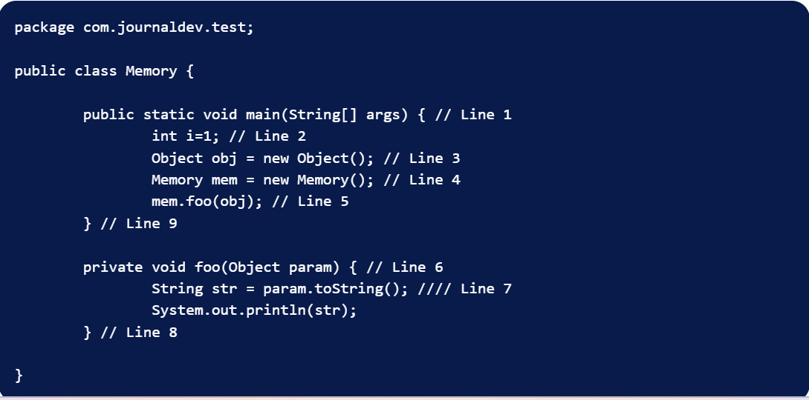

# Heap and Stack Memory in Java Program
The below image shows the Stack and Heap memory with reference to the above program and how they are being used to store primitive, Objects and reference variables.

Let’s go through the steps of the execution of the program.
#) As soon as we run the program, it loads all the Runtime classes into the Heap space.
#) When the main() method is found at line 1, Java Runtime creates stack memory to be used by main() method thread.
#) We are creating primitive local variable at line 2, so it’s created and stored in the stack memory of main() method.
#) Since we are creating an Object in the 3rd line, it’s created in heap memory and stack memory contains the reference for it.
#) A similar process occurs when we create Memory object in the 4th line.
#) Now when we call the foo() method in the 5th line, a block in the top of the stack is created to be used by the foo() method. Since Java is pass-by-value, a new reference to Object is created in the foo() stack block in the 6th line.
#) A string is created in the 7th line, it goes in the String Pool in the heap space and a reference is created in the foo() stack space for it.
#) foo() method is terminated in the 8th line, at this time memory block allocated for foo() in stack becomes free.
#) In line 9, main() method terminates and the stack memory created for main() method is destroyed. Also, the program ends at this line, hence Java Runtime frees all the memory and ends the execution of the program.